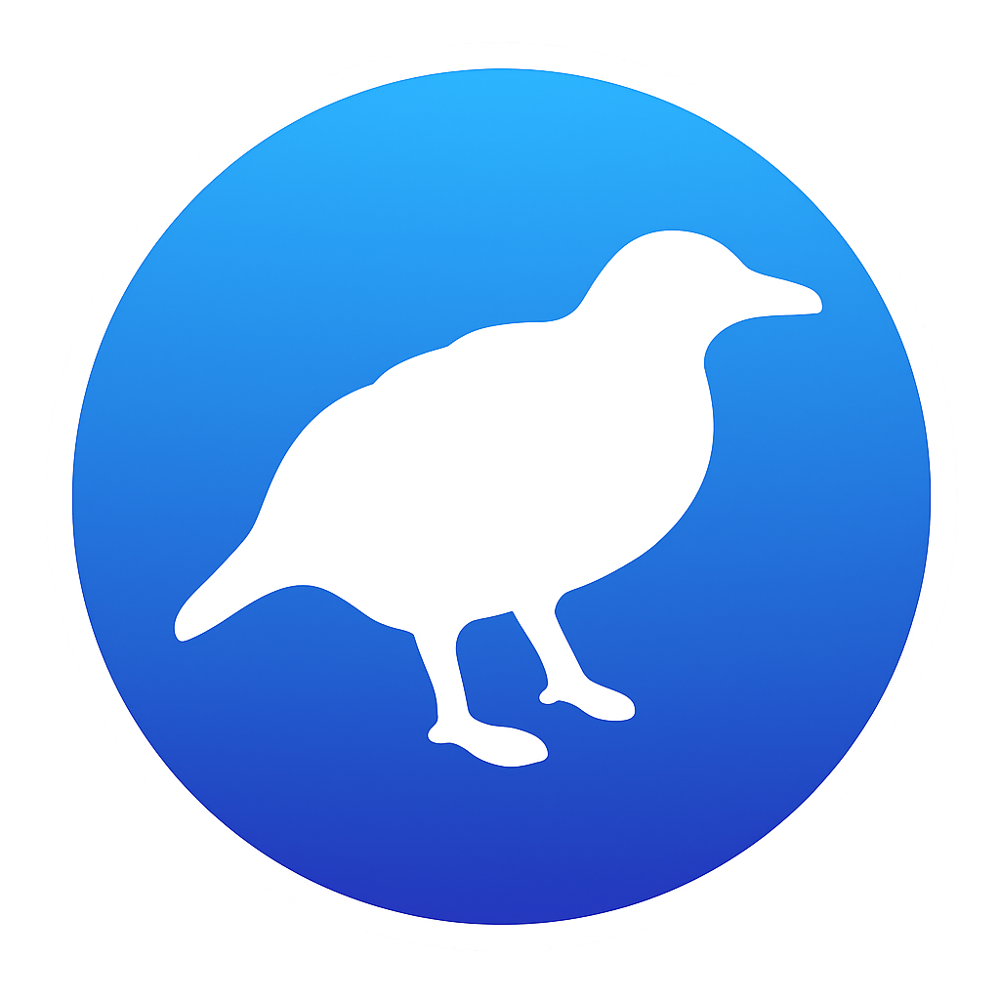

WEKA API Server Documentation
A REST API layer for running machine learning workflows using WEKA. The server exposes endpoints for dataset management, classifier training, prediction, evaluation, exploratory data analysis, leakage-safe preprocessing, and post-training diagnostics — all over plain JSON.
Overview #
The WEKA API Server wraps the open-source WEKA machine learning library in a small HTTP service so that any client — a notebook, a frontend, a CI job — can train, evaluate, and introspect classifiers without touching the JVM. The API is organised around REST and uses predictable, resource-oriented URLs that return JSON-encoded responses.

The server is intentionally small in scope:
- Single-user, local development. Binds to
127.0.0.1, no authentication, no multi-tenant isolation. - Filesystem persistence. Datasets land in
./dataand serialized models in./modelsvia Docker bind mounts — restarts preserve state. - Convention over configuration. The last attribute of an uploaded dataset is treated as the class by default; all classifier and filter classnames are allowlisted to
weka.classifiers.*/weka.filters.*.
Built with
A small, conventional Java stack — chosen for fast startup, minimal ceremony, and full access to the WEKA classpath at runtime.
Getting started #
The fastest path from clone to a live API is via Docker Compose. The first build downloads the WEKA library and its dependencies into the local Maven cache; subsequent builds reuse it.
Prerequisites
- Docker Desktop (or any Docker engine) with Compose v2 (
docker compose ...). - About 1 GB free disk for the first image build.
- Port
7070free on127.0.0.1.
1. Start the server
From the repository root (the directory containing compose.yaml):
# build the image and start the container docker compose up --build # or detached docker compose up --build -d
2. Verify it's up
curl http://localhost:7070/health # → {"status":"ok","wekaVersion":"3.9.6"}
3. Configuration
All environment variables have defaults — docker compose up works without any .env file.
.model files live.DEBUG, INFO, WARN, ERROR).Example request
A minimal end-to-end smoke test — upload the sample dataset, train a classifier, get a prediction back:
curl -X POST http://localhost:7070/predict \ -H 'Content-Type: application/json' \ -d '{ "model": "iris-j48", "instances": [ {"sepallength":5.1,"sepalwidth":3.5,"petallength":1.4,"petalwidth":0.2} ] }'
{
"model": "iris-j48",
"predictions": [
{ "predictedClass": "Iris-setosa",
"distribution": {
"Iris-setosa": 1.0,
"Iris-versicolor": 0.0,
"Iris-virginica": 0.0
} }
]
}
All requests are application/json unless stated otherwise. Errors return { "error": "...", "code": "..." }; see the Errors section for the full code table.
Authentication #
The WEKA API Server is a single-user local development service and ships with no authentication. The Docker container binds explicitly to 127.0.0.1 so it is not reachable from outside the host machine. Do not expose the service to the public internet without first adding a reverse proxy with TLS termination and an auth layer.
weka.classifiers., filters with weka.filters.. Filenames are sanitised against /, \, and .. path-traversal patterns.
Errors #
The API uses conventional HTTP response codes. All error responses share the shape { "error": "...", "code": "..." }. The code field is a stable machine-readable identifier from the table below.
{
"error": "dataset 'foo' not found",
"code": "DATASET_NOT_FOUND"
}
| Code | HTTP | When |
|---|---|---|
| DATASET_NOT_FOUND | 404 | No file at DATA_DIR/{name}.{ext} |
| MODEL_NOT_FOUND | 404 | No file at MODELS_DIR/{name}.model |
| INVALID_NAME | 400 | Name contains /, \, or .. |
| INVALID_ALGORITHM | 400 | Classname outside weka.classifiers. allowlist |
| INVALID_FORMAT | 400 | Unsupported file extension |
| UPLOAD_TOO_LARGE | 413 | Exceeds MAX_UPLOAD_MB |
| TRAINING_FAILED | 422 | WEKA threw during buildClassifier |
| PREDICTION_FAILED | 422 | WEKA threw during prediction |
| EVALUATION_FAILED | 422 | WEKA threw during evaluation |
| INVALID_FILTER | 400 | Filter outside weka.filters. allowlist or unknown class |
| TRANSFORM_FAILED | 422 | WEKA threw applying a filter chain |
| INVALID_ATTRIBUTE | 400 | Attribute name not on dataset |
| INVALID_CLASS_VALUE | 400 | Class value not in the class attribute's domain |
| NOT_DRAWABLE | 400 | Classifier doesn't implement Drawable / wrong graph type |
| NOT_NOMINAL_CLASS | 400 | Diagnostic requires a nominal class but the model's class is numeric |
| NOT_NUMERIC_CLASS | 400 | Reserved for future numeric-class diagnostics |
| BAD_REQUEST | 400 | Malformed JSON or missing required fields |
| INTERNAL_ERROR | 500 | Anything uncaught (also logged with full stacktrace) |
Health #
Liveness probe and WEKA library version. Use this to verify the service is up and ready to accept requests.
GET /health
Returns a small status payload with the bundled WEKA library version. No side effects.
curl http://localhost:7070/health
{
"status": "ok",
"wekaVersion": "3.9.6"
}
GET /algorithms #
Lists WEKA classifier classnames grouped by family — trees, bayes, functions, lazy, rules, meta, and misc. The result is cached for the process lifetime.
curl http://localhost:7070/algorithms
{
"classifiers": {
"bayes": ["weka.classifiers.bayes.NaiveBayes"],
"functions": ["weka.classifiers.functions.Logistic"],
"lazy": ["weka.classifiers.lazy.IBk"],
"meta": ["weka.classifiers.meta.AdaBoostM1"],
"rules": ["weka.classifiers.rules.JRip"],
"trees": ["weka.classifiers.trees.J48",
"weka.classifiers.trees.RandomForest"]
}
}
ClassDiscovery can't enumerate the classpath at runtime, the controller falls back to a curated set of common classifiers. All classifiers on the classpath remain usable via /train regardless of whether they appear in the listing.
Datasets #
The dataset resource represents an uploaded ARFF or CSV file persisted on disk. Datasets are referenced by name everywhere else in the API. The last attribute is treated as the class by convention.
POST /datasets — Upload a dataset
Uploads an ARFF or CSV file. The request body must be multipart/form-data. On success returns 201 Created.
Body parameters
.arff) or CSV (.csv) file. Subject to the MAX_UPLOAD_MB limit (default 100 MB)./, \, or ...curl -F file=@iris.arff \ -F name=iris \ http://localhost:7070/datasets
{
"name": "iris",
"path": "iris.arff",
"format": "arff",
"numInstances": 150,
"numAttributes": 5,
"classAttribute": "class"
}
GET /datasets — List #
Returns every dataset currently on disk, with its on-disk size. The listing has no pagination — the local-dev usage envelope assumes a handful of datasets, not hundreds.
curl http://localhost:7070/datasets
{
"datasets": [
{ "name": "iris", "format": "arff", "sizeBytes": 7045 }
]
}
GET /datasets/:name — Metadata #
Returns full metadata about the named dataset — every attribute, its type, and (for nominal attributes) the full domain of legal values. The class attribute is identified explicitly in the response.
curl http://localhost:7070/datasets/iris
{
"name": "iris",
"format": "arff",
"numInstances": 150,
"attributes": [
{ "name": "sepallength", "type": "numeric" },
{ "name": "sepalwidth", "type": "numeric" },
{ "name": "petallength", "type": "numeric" },
{ "name": "petalwidth", "type": "numeric" },
{ "name": "class",
"type": "nominal",
"values": ["Iris-setosa", "Iris-versicolor", "Iris-virginica"] }
],
"classAttribute": "class"
}
DELETE /datasets/:name #
Removes the dataset from disk. Returns 204 No Content on success. Models trained against the dataset are unaffected — they keep an internal copy of the relevant header information.
curl -X DELETE http://localhost:7070/datasets/iris # 204 No Content
Training & inference #
The training endpoint fits any classifier from WEKA's weka.classifiers.* namespace against an uploaded dataset and persists the serialized model to MODELS_DIR/{modelName}.model. The dataset header is saved alongside it so prediction is possible later even if the source dataset is deleted.
POST /train — Train a classifier
Body parameters
weka.classifiers. (allowlist enforced).["-C","0.25","-M","2"] for J48's confidence factor and minimum number of instances per leaf.-1, meaning use the last attribute.FilteredClassifier. Each element is { "filter": "<fqn>", "options": [...] }. Required when using supervised filters to avoid class-info leakage. See the leakage-safe workflow.curl -X POST http://localhost:7070/train \ -H 'Content-Type: application/json' \ -d '{ "dataset": "iris", "algorithm": "weka.classifiers.trees.J48", "options": ["-C","0.25","-M","2"], "modelName": "iris-j48" }'
{
"modelName": "iris-j48",
"algorithm": "weka.classifiers.trees.J48",
"trainedOn": "iris",
"trainingTimeMs": 142,
"summary": "J48 pruned tree\n------------------\n..."
}
The persisted model name, the algorithm classname, training dataset name, training duration in ms, and WEKA's textual summary of the fitted model.
POST /predict — Score new instances #
Runs a previously trained model against a batch of instances. Each instance is a plain JSON object mapping attribute name to value; missing keys are treated as missing values by WEKA.
Body parameters
curl -X POST http://localhost:7070/predict \ -H 'Content-Type: application/json' \ -d '{ "model": "iris-j48", "instances": [ {"sepallength":5.1,"sepalwidth":3.5,"petallength":1.4,"petalwidth":0.2}, {"sepallength":6.7,"sepalwidth":3.0,"petallength":5.2,"petalwidth":2.3} ] }'
{
"model": "iris-j48",
"predictions": [
{ "predictedClass": "Iris-setosa",
"distribution": {
"Iris-setosa": 1.0, "Iris-versicolor": 0.0, "Iris-virginica": 0.0
} },
{ "predictedClass": "Iris-virginica",
"distribution": {
"Iris-setosa": 0.0, "Iris-versicolor": 0.02, "Iris-virginica": 0.98
} }
]
}
For a nominal class problem, each prediction includes the predictedClass label and a full distribution over class labels. For a numeric class, distribution is omitted and predictedClass is the numeric value rendered as a string.
POST /evaluate — Score against a dataset #
Evaluates a trained model against an arbitrary dataset and returns standard classification metrics — accuracy, Cohen's kappa, weighted F1, and a confusion matrix — plus WEKA's full textual summary.
Body parameters
curl -X POST http://localhost:7070/evaluate \ -H 'Content-Type: application/json' \ -d '{"model":"iris-j48","dataset":"iris"}'
{
"model": "iris-j48",
"dataset": "iris",
"numInstances": 150,
"correct": 147,
"incorrect": 3,
"accuracy": 0.98,
"kappa": 0.97,
"weightedFMeasure": 0.98,
"confusionMatrix": [[50,0,0],[0,49,1],[0,2,48]],
"classLabels": ["Iris-setosa", "Iris-versicolor", "Iris-virginica"]
}
Models #
Trained models are persisted as .model files alongside a .header file that captures the dataset structure they were fit against. Models can be listed, fetched for metadata, deleted, or interrogated for their internal structure when applicable.
GET /models — List
Returns every trained model on disk with its serialized size in bytes.
curl http://localhost:7070/models
{
"models": [
{ "name": "iris-j48", "sizeBytes": 8123 }
]
}
GET /models/:name — Metadata #
Returns the model's algorithm classname and WEKA's textual summary — useful for displaying the fitted tree, the learned coefficients, or whatever else the underlying classifier chooses to render.
curl http://localhost:7070/models/iris-j48
{
"name": "iris-j48",
"algorithm": "weka.classifiers.trees.J48",
"summary": "J48 pruned tree\n------------------\n..."
}
DELETE /models/:name #
Deletes the .model and .header files from disk and invalidates the in-memory cache entry. Returns 204 No Content.
curl -X DELETE http://localhost:7070/models/iris-j48 # 204 No Content
GET /models/:name/drawable-type #
Returns a single field, type, indicating which structural endpoint is supported for this classifier — one of "tree", "graph", "newick", or "none". Use this to decide whether to render a tree diagram or a Bayes net.
curl http://localhost:7070/models/iris-j48/drawable-type
{ "name": "iris-j48", "type": "tree" }
GET /models/:name/tree #
Returns the classifier's tree in Graphviz DOT format. Supported for tree-based classifiers including J48, RandomTree, REPTree, M5P, LMT, and HoeffdingTree. Returns 400 NOT_DRAWABLE if the classifier isn't a tree.
curl http://localhost:7070/models/iris-j48/tree
{
"name": "iris-j48",
"type": "tree",
"format": "dot",
"graph": "digraph J48Tree {\nN0 [label=\"petalwidth\"]\n..."
}
GET /models/:name/graph #
Same response shape as /tree, but for Bayes-net classifiers (weka.classifiers.bayes.BayesNet).
curl http://localhost:7070/models/iris-bn/graph
EDA / data exploration #
All five EDA endpoints take a dataset name in the path and never mutate state. They share a common sampling convention: pass sample (max 5000, default 500) and seed (default 42) to control the random shuffle used for scatter-style endpoints.
GET /datasets/:name/attribute-stats
Per-attribute summary using WEKA's AttributeStats. For numeric attributes returns min/max/mean/stdDev/sum; for nominal attributes returns the full value-count map.
curl 'http://localhost:7070/datasets/iris/attribute-stats?attribute=petallength'
{
"name": "petallength",
"type": "numeric",
"count": 150, "missing": 0, "distinct": 43, "unique": 2,
"numeric": {
"min": 1.0, "max": 6.9,
"mean": 3.7587, "stdDev": 1.7644, "sum": 563.8
}
}
{
"name": "class",
"type": "nominal",
"count": 150, "missing": 0, "distinct": 3, "unique": 0,
"nominalCounts": {
"Iris-setosa": 50, "Iris-versicolor": 50, "Iris-virginica": 50
}
}
GET /datasets/:name/summary #
The bulk version of /attribute-stats — returns stats for every attribute on the dataset in a single response.
curl http://localhost:7070/datasets/iris/summary
GET /datasets/:name/histogram #
For numeric attributes, returns equal-width bins between min and max. For nominal attributes, one bin per value. Pass groupBy=class to break each bin down by class label — useful for assessing per-class feature separability.
curl 'http://localhost:7070/datasets/iris/histogram?attribute=petallength&bins=5&groupBy=class'
{
"attribute": "petallength",
"type": "numeric",
"bins": [
{ "lo": 1.0, "hi": 2.18, "count": 50,
"byClass": { "Iris-setosa": 50, "Iris-versicolor": 0, "Iris-virginica": 0 } }
],
"missing": 0,
"classLabels": ["Iris-setosa", "Iris-versicolor", "Iris-virginica"]
}
GET /datasets/:name/scatter #
Per-point JSON for an x/y plot. Points carry a class field when the dataset has a nominal class. Set jitter=true to add Gaussian noise when an axis is nominal — the jitter is applied to the response only, never to the dataset on disk.
curl 'http://localhost:7070/datasets/iris/scatter?x=petallength&y=petalwidth&sample=200'
{
"x": "petallength", "y": "petalwidth",
"xType": "numeric", "yType": "numeric",
"classAttribute": "class",
"totalInstances": 150, "sampled": 150,
"points": [{ "x": 1.4, "y": 0.2, "class": "Iris-setosa" }]
}
GET /datasets/:name/scatter-matrix #
Returns all unordered pairs of the listed attributes. The server caps the input at 6 attributes — that's up to 15 pairs in a single response.
curl 'http://localhost:7070/datasets/iris/scatter-matrix?attributes=sepallength,sepalwidth,petallength&sample=200'
{
"attributes": ["sepallength", "sepalwidth", "petallength"],
"classAttribute": "class",
"totalInstances": 150, "sampled": 150,
"pairs": [
{ "x": "sepallength", "y": "sepalwidth",
"points": [{ "x": 5.1, "y": 3.5, "class": "Iris-setosa" }] }
]
}
Filters & transform #
Filters preprocess datasets — normalisation, discretisation, attribute selection, PCA, missing-value imputation, and so on. The API surfaces the full WEKA filter classpath, exposes per-filter metadata for client-side form generation, and offers two distinct workflows for applying preprocessing before training.
GET /filters — List available filters
Every WEKA filter discoverable on the classpath, grouped by family: unsupervised.attribute, unsupervised.instance, supervised.attribute, supervised.instance, plus misc for top-level filters like MultiFilter. Each entry carries flags so the client picker can distinguish leakage-prone supervised filters from safe unsupervised ones.
The supervised flag is derived from the SupervisedFilter / UnsupervisedFilter marker interfaces — null for top-level filters that implement neither.
curl http://localhost:7070/filters
{
"filters": {
"unsupervised.attribute": [
{ "classname": "weka.filters.unsupervised.attribute.Normalize",
"supervised": false, "level": "attribute" }
],
"supervised.attribute": [
{ "classname": "weka.filters.supervised.attribute.Discretize",
"supervised": true, "level": "attribute" }
],
"misc": [
{ "classname": "weka.filters.AllFilter",
"supervised": null, "level": null }
]
}
}
GET /filters/metadata #
Per-filter introspection — returns WEKA's globalInfo() description and the full listOptions() schema so a client picker can render an options form without hardcoding any filter knowledge.
For boolean flags (numArguments == 0), default is the literal true/false — WEKA boolean flags default to off when absent. For value flags (numArguments >= 1), default is the stringified value (omitted when no default is set).
curl 'http://localhost:7070/filters/metadata?filter=weka.filters.unsupervised.attribute.Normalize'
{
"classname": "weka.filters.unsupervised.attribute.Normalize",
"supervised": false,
"level": "attribute",
"family": "unsupervised.attribute",
"description": "Normalizes all numeric values in the given dataset...",
"options": [
{ "name": "S", "synopsis": "-S <num>",
"description": "The scaling factor (default 1.0).",
"numArguments": 1, "default": "1.0" },
{ "name": "T", "synopsis": "-T <num>",
"description": "The translation (default 0.0).",
"numArguments": 1, "default": "0.0" }
]
}
POST /transform — Apply a filter chain #
Apply a chain of filters to an existing dataset and persist the result as a new dataset.
Body parameters
{ "filter": "<weka.filters.* FQN>", "options": [...] }. Filter must start with weka.filters. (allowlist)."arff" (default) or "csv".curl -X POST http://localhost:7070/transform \ -H 'Content-Type: application/json' \ -d '{ "dataset": "iris", "filters": [ {"filter": "weka.filters.unsupervised.attribute.Normalize", "options": []} ], "outputName": "iris-norm" }'
{
"name": "iris-norm",
"format": "arff",
"path": "iris-norm.arff",
"numInstances": 150,
"numAttributes": 5,
"filtersApplied": ["weka.filters.unsupervised.attribute.Normalize"]
}
/transform on your full dataset and then training on the result leaks class signal into the features. Use the embedded filter chain on POST /train instead — the API will wrap your classifier in FilteredClassifier so the filter is fit per fold rather than once on the entire dataset.
Common supervised offenders: supervised.attribute.Discretize (Fayyad–Irani MDL), supervised.attribute.AttributeSelection, supervised.attribute.NominalToBinary, supervised.attribute.MergeNominalValues.
curl -X POST http://localhost:7070/train \ -H 'Content-Type: application/json' \ -d '{ "dataset": "iris", "algorithm": "weka.classifiers.trees.J48", "modelName": "iris-fc-j48", "filters": [ {"filter": "weka.filters.supervised.attribute.AttributeSelection", "options": ["-E","weka.attributeSelection.CfsSubsetEval", "-S","weka.attributeSelection.BestFirst"]} ] }'
weka.filters.unsupervised.attribute.PrincipalComponents works on datasets with a nominal class — it ignores the class attribute when computing components and passes it through unchanged.
POST /transform/preview #
Same request body as /transform minus outputName. Runs the chain in memory and returns metadata plus a small sample of transformed rows. Nothing is written to DATA_DIR — use this to iterate on a filter chain before committing.
Query parameters
20, bounded to 1–200.42.curl -X POST 'http://localhost:7070/transform/preview?head=10' \ -H 'Content-Type: application/json' \ -d '{ "dataset": "iris", "filters": [ {"filter": "weka.filters.unsupervised.attribute.Normalize", "options": []} ] }'
{
"dataset": "iris",
"totalInstances": 150, "sampled": 10,
"numAttributes": 5,
"filtersApplied": ["weka.filters.unsupervised.attribute.Normalize"],
"head": [
{ "sepallength": 0.222, "sepalwidth": 0.625,
"petallength": 0.068, "petalwidth": 0.042,
"class": "Iris-setosa" }
]
}
Post-training diagnostics #
All five POST endpoints share the same request shape — a trained model, an evaluation dataset, and a handful of optional knobs for sampling and binning.
Shared body parameters
10, max 100./errors. Default 500, max 5000.42.POST /diagnostics/errors
Per-instance predicted vs. actual — WEKA's Visualize classifier errors. For numeric class, each point includes actual, predicted, and the absolute error.
curl -X POST http://localhost:7070/diagnostics/errors \ -H 'Content-Type: application/json' \ -d '{"model":"iris-j48","dataset":"iris"}'
{
"model": "iris-j48", "dataset": "iris",
"classType": "nominal",
"totalInstances": 150, "sampled": 150,
"points": [
{ "index": 0,
"actual": "Iris-setosa",
"predicted": "Iris-setosa",
"correct": true }
]
}
POST /diagnostics/threshold-curve #
ROC / threshold curve for a chosen positive class. Each point carries threshold, TPR, FPR, precision, recall, and F1. The overall AUC is included as a top-level field. Numeric-class models return 400 NOT_NOMINAL_CLASS.
curl -X POST http://localhost:7070/diagnostics/threshold-curve \ -H 'Content-Type: application/json' \ -d '{"model":"iris-j48","dataset":"iris","classValue":"Iris-versicolor"}'
{
"model": "iris-j48", "dataset": "iris",
"classValue": "Iris-versicolor",
"auc": 0.99,
"points": [
{ "threshold": 0.0, "truePositiveRate": 1.0, "falsePositiveRate": 1.0,
"precision": 0.33, "recall": 1.0, "fMeasure": 0.5 }
]
}
POST /diagnostics/margin-curve #
Cumulative margin distribution — WEKA's MarginCurve. Useful for ensemble diagnostics (AdaBoost, Bagging) to see whether margins improve as boosting iterations accrue.
Field meaning: margin is the difference between the probability assigned to the actual class and the highest probability for any other class. current and cumulative together describe the empirical CDF of margins.
curl -X POST http://localhost:7070/diagnostics/margin-curve \ -H 'Content-Type: application/json' \ -d '{"model":"iris-j48","dataset":"iris"}'
{
"model": "iris-j48", "dataset": "iris",
"points": [
{ "margin": -1.0, "current": 0.0, "cumulative": 0.0 },
{ "margin": 0.92, "current": 3.0, "cumulative": 0.02 },
{ "margin": 1.0, "current": 147.0, "cumulative": 1.0 }
]
}
POST /diagnostics/cost-curve #
Drummond–Holte cost curve for a chosen positive class. Plots the Normalised Expected Cost against the Probability Cost Function — i.e. how sensitive the model's expected cost is to changes in class skew. A flat curve near zero means the model is robust to class skew; a curve that spikes near the centre means cost is highly sensitive.
curl -X POST http://localhost:7070/diagnostics/cost-curve \ -H 'Content-Type: application/json' \ -d '{"model":"iris-j48","dataset":"iris","classValue":"Iris-versicolor"}'
{
"model": "iris-j48", "dataset": "iris",
"classValue": "Iris-versicolor",
"points": [
{ "probabilityCostFunction": 0.0, "normalizedExpectedCost": 0.0 },
{ "probabilityCostFunction": 0.5, "normalizedExpectedCost": 0.04 },
{ "probabilityCostFunction": 1.0, "normalizedExpectedCost": 0.0 }
]
}
POST /diagnostics/calibration #
Reliability diagram and Brier score. Manually binned because WEKA doesn't ship a first-party utility. Each bin reports its predictedProb (mean predicted probability of instances in that bin) and observedFraction (fraction of those instances that actually belonged to the positive class).
curl -X POST http://localhost:7070/diagnostics/calibration \ -H 'Content-Type: application/json' \ -d '{"model":"iris-j48","dataset":"iris","classValue":"Iris-versicolor","bins":10}'
{
"model": "iris-j48", "dataset": "iris",
"classValue": "Iris-versicolor",
"brierScore": 0.04,
"totalInstances": 150,
"bins": [
{ "bin": 0, "lo": 0.0, "hi": 0.1,
"count": 99, "predictedProb": 0.01, "observedFraction": 0.0 }
]
}
End-to-end walkthrough #
A complete tour of the API — from uploading the sample iris.arff through training, predicting, evaluating, applying filters, and inspecting post-training diagnostics. Run these requests in order against a fresh instance to reproduce the test suite end to end.
# 1. upload curl -F file=@iris.arff -F name=iris http://localhost:7070/datasets # 2. train curl -X POST http://localhost:7070/train \ -H 'Content-Type: application/json' \ -d '{"dataset":"iris", "algorithm":"weka.classifiers.trees.J48", "modelName":"iris-j48"}' # 3. predict curl -X POST http://localhost:7070/predict \ -H 'Content-Type: application/json' \ -d '{"model":"iris-j48","instances":[ {"sepallength":5.1,"sepalwidth":3.5, "petallength":1.4,"petalwidth":0.2} ]}' # 4. evaluate curl -X POST http://localhost:7070/evaluate \ -H 'Content-Type: application/json' \ -d '{"model":"iris-j48","dataset":"iris"}' # 5. diagnostics curl -X POST http://localhost:7070/diagnostics/threshold-curve \ -H 'Content-Type: application/json' \ -d '{"model":"iris-j48","dataset":"iris", "classValue":"Iris-versicolor"}' # 6. tree structure curl http://localhost:7070/models/iris-j48/tree
Legal & attribution #
This page documents a project built during a Master's of AI at the University of Waikato that integrates with the open-source WEKA library. The sections below clarify the relationship and credit the WEKA project appropriately.